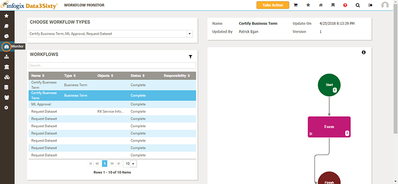
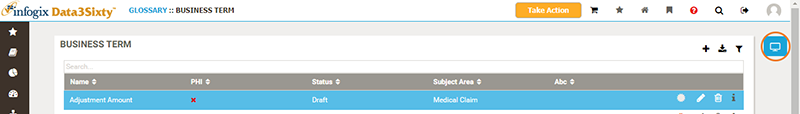

|
|
Following workflows
A workflow is a set of steps that can be applied to an artifact to control how the item is managed within the business glossary. When you are working with existing artifacts, or proposing new artifacts to be added to the glossary, you will need to follow the workflow steps set out by your organization's governance program.
Tip: This topic provides an understanding of workflows for end users. If you are an Administrator and want to set up a new workflow, see Establishing workflows.
Understanding workflows
There are no pre-built workflows in Infogix Data3Sixty Govern. You can create workflows to match your organization's governance program.
The following table gives some examples of how workflows are commonly used:
| Workflow type | Description |
|---|---|
| Certification workflow |
The certification that an artifact within the glossary meets the governance criteria set out by your organization, for example, verifying expected metadata or levels of ownership on a selected artifact. The following steps outline an example of a certification workflow:
Tip: As well as applying to new items, a certification workflow can also be scheduled periodically for a set of artifacts, e.g. the investment team may want to have their business terms certified every six months. For information on establishing a new certification workflow, see Certification workflow. |
| Issue workflow | This is a separate type of workflow that allows you to raise issues, tag them to specific artifacts and route them to the responsible people for action, see Raising issues. |
Workflow Monitoring
You can use the Workflow Monitor to track versions of workflows, and to view form responses.
Click the Monitor button on the left of the screen to open the Workflow Monitor page:

Selecting a workflow from the Workflows panel will display the corresponding flowchart on the right of the page. You can select specific steps of the flowchart to view more information.
You can also access the Workflows panel and see a list of assignments for a specific artifact, for example a Business Term, by clicking the Workflow Monitor button on the right of the screen:

My Assignments
Below the Workflows panel, you will see a My Assignments panel showing a list of tasks assigned to you.
If you are an approver, you can select an open item from the My Assignments panel to approve it.